A SELECT SQL utasítás segítségével egy ideiglenes, virtuális táblát tudunk létrehozni,amely csak a lekérés végig létezik.
Hozzuk létre a következő adatbázist a XAMPP felületen:
CREATE DATABASE tanker
DEFAULT CHARACTER SET utf8
COLLATE utf8_hungarian_ci;
USE tanker;
CREATE TABLE szemelyek (
az int NOT NULL PRIMARY KEY AUTO_INCREMENT,
nev varchar(50),
telepules varchar(50),
cim varchar(50),
belepes date
);
INSERT INTO szemelyek (nev, telepules, cim, belepes) VALUES
('Nagy József', 'Szolnok', 'Nyár u. 3.', '2010-03-17'),
('Pár Elek', 'Debrecen', 'Tél u. 3.', '2005-01-01'),
('Tér Ferenc', 'Szolnok', 'Kossuth u. 5.', '2000-02-01'),
('Dolog Károly', 'Szeged', 'Almás tér 2', '2007-05-01'),
('Tronf Mihály', 'Debrecen', 'Lát u. 45.', '2005-02-01'),
('Ab Béla', 'Szolnok', 'Bach u. 91', '2000-07-01');
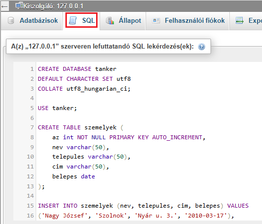
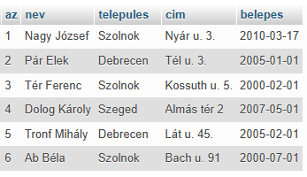
1. Példa: Sorold fel a szolnoki személyeket! Írasd ki a személyek nevét, mint és a települést, mint .
SELECT nev AS "Személy", telepules AS "Település"
FROM szemelyek
WHERE telepules = "Szolnok";
Mindig egy mondatként gondoljunk a leképezésünkre.
| Válogassuk le a személyek nevét (nev), mint , a települést (telepules), mint |
SELECT nev AS "Személy", telepules AS
"Település"
|
| a szemelyek táblából, |
FROM szemelyek
|
| ahol a telepules . |
WHERE telepules = "Szolnok";
|
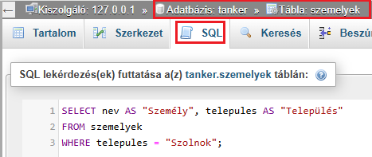
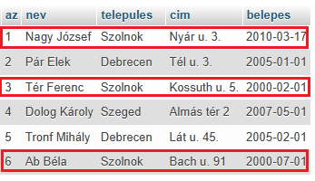
A virtuális táblában a mezőnevek: és .
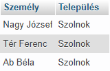
2. Példa: Sorold fel a szolnoki vagy debreceni személyeket! Írasd ki a személyek nevét, mint és a települést, mint .
SELECT nev AS "Személy", telepules AS "Település"
FROM szemelyek
WHERE telepules = "Szolnok" OR telepules = "Debrecen";
Mindig egy mondatként gondoljunk a leképezésünkre.
| Válogassuk le a személyek nevét (nev), mint , a települést (telepules), mint |
SELECT nev AS "Személy", telepules AS
"Település"
|
| a szemelyek táblából, |
FROM szemelyek
|
| ahol a telepules vagy a telepules . |
WHERE telepules = "Szolnok" OR telepules =
"Debrecen";
|
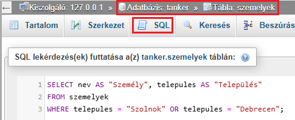
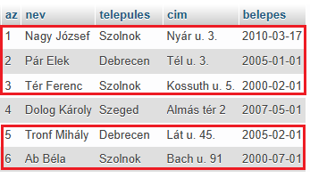
A virtuális táblában a mezőnevek: és .
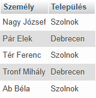
3. Példa: Sorold fel azokat a személyeket, akik 2006.01.01. után léptek be! Írasd ki a személyek nevét, mint és a belépés időpontját, mint .
SELECT nev AS "Személy", belepes AS "Belépés időpontja"
FROM szemelyek
WHERE belepes > "2006-01-01";
Mindig egy mondatként gondoljunk a leképezésünkre.
Figyeljünk a dátumra: 2006.01.01. helyett 2006-01-01!
| Válogassuk le a személyek nevét (nev), mint , a belépések időpontját (belepes), mint |
SELECT nev AS "Személy", belepes AS "Belépés
időpontja"
|
| a szemelyek táblából, |
FROM szemelyek
|
| ahol a belepes nagyobb, mint . |
WHERE belepes > "2006-01-01";
|
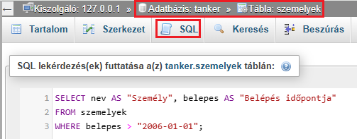
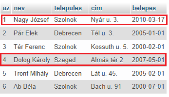
A virtuális táblában a mezőnevek: és .
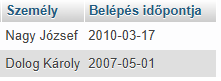
1. Feladat: Sorold fel azokat a szolnoki személyeket, akik 2006.01.01. előtt léptek be. Írasd ki a személyek nevét, mint , a települést, mint és a belépések időpontját, mint .
2. Feladat: Sorold fel azokat a személyeket, akik 2004.01.01. után de 2007.12.31. előtt léptek be. Írasd ki a személyek nevét, mint és a belépések időpontját, mint .